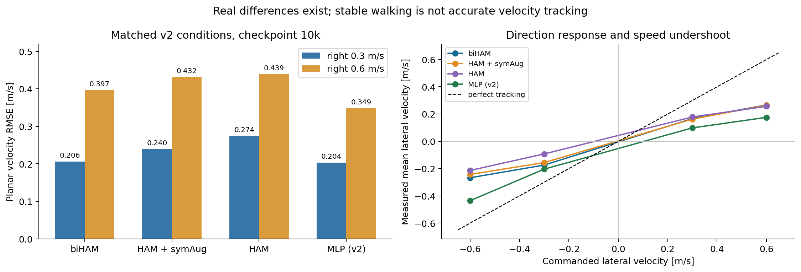
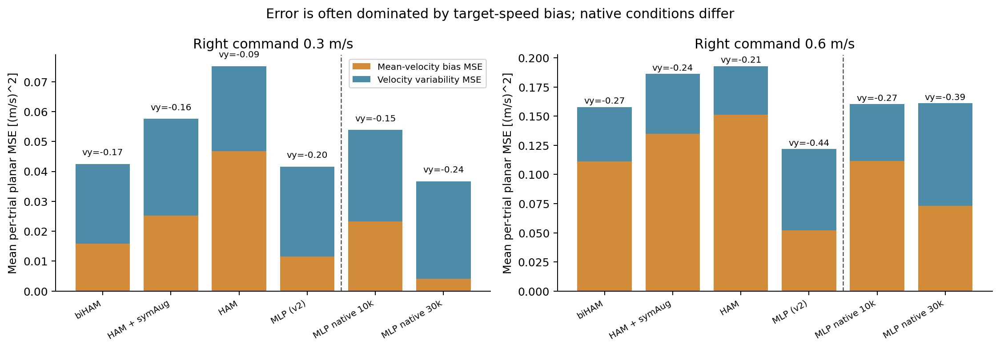
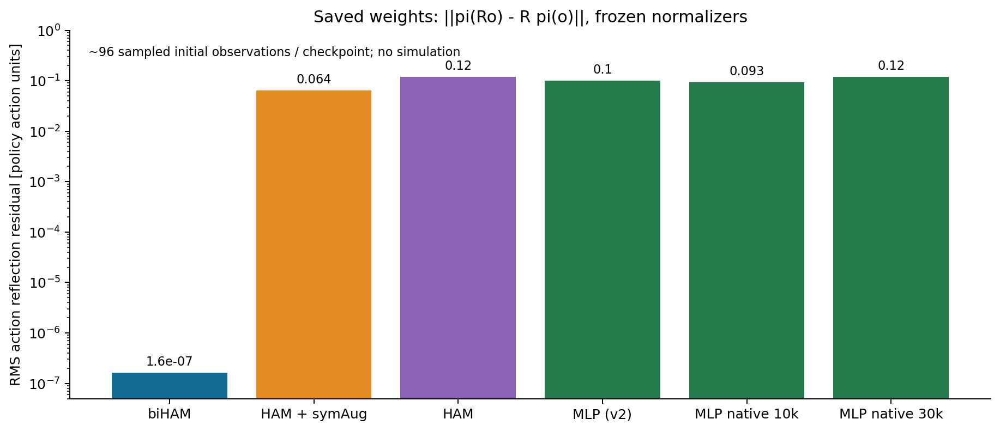
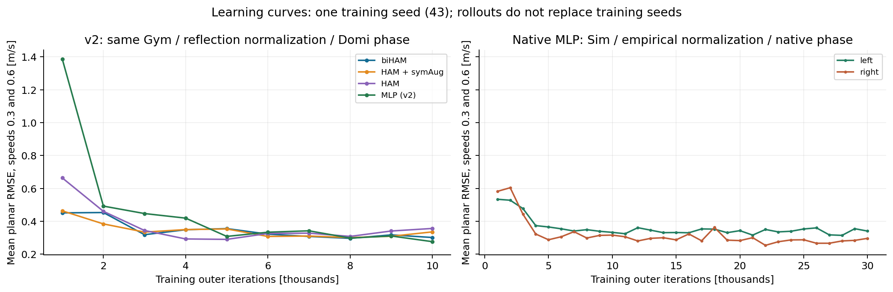
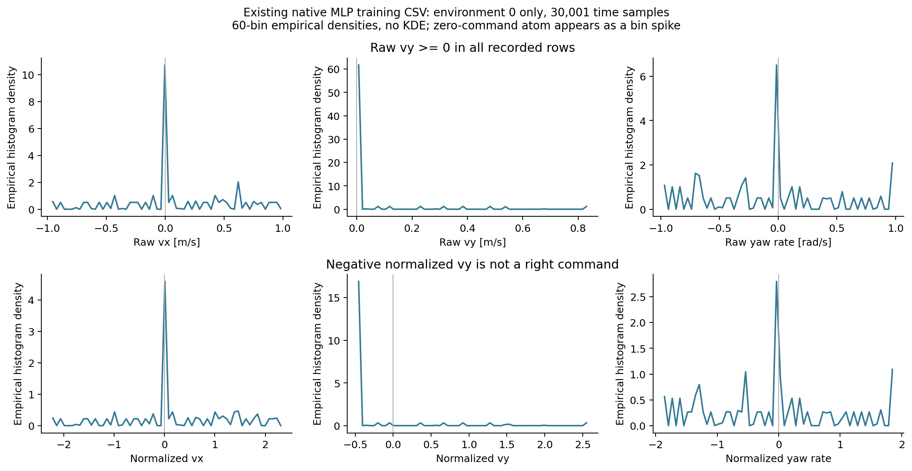

Holosoma OOD command 야간 감사
2026-11-02 · 기존 코드 보존 · GPU / 학습 / 물리 평가 재실행 없음
실제 버그는 있다. 그러나 MLP의 부분적인 오른쪽 명령 추종을 숨은 augmentation이나 RMSE 계산 오류로 설명할 증거는 찾지 못했다.
새 vanilla MLP의 실제 raw vy<0 입력은 감사 카운터에서 0건이다. 네트워크의 구조적 대칭성에는 큰 차이가 있고, 목표 속도 추종에는 공통된 한계가 남는다. 정확한 일반화 원인은 아직 인과적으로 확인되지 않았다.
먼저 읽을 1쪽 요약 · 전체 한국어 보고서 · 전체 좌/우 수치 CSV
체크포인트 150개평가 1,790케이스 / 57,280 trialsTensorBoard 188개영상 86개 전체 CPU 디코딩같은 v2 조건의 10k 결과
IsaacGym + reflection normalization + Domi phase. 각 32 trials, planar RMSE [m/s]. HAM+symAug는 합성 오른쪽 학습 샘플을 받는다.
별도 native MLP 결과
IsaacSim + empirical normalization + native phase. 위 네트워크들과 backend·전처리 조건이 다르다.
직접 확인할 그림

같은 v2 조건에서도 차이는 존재한다. 특히 biHAM은 양쪽의 느린 추종이 대응하고 MLP v2는 큰 좌우 비대칭을 보인다.
평균 RMSE만 보면 target-speed bias, vx drift, 보행 진동의 차이가 가려진다. 점선 오른쪽 native 실행은 조건이 다르다.
biHAM 반사 잔차 약 1.6×10⁻⁷, MLP v2 약 0.10. 같은 모델을 다른 이름으로 평가한 것이 아니다. 단위는 policy action 단위이며 rollout RMSE와 다르다.
훈련 seed는 43 하나다. 평가 rollout 32개를 여러 학습 seed의 증거로 볼 수 없다.
env 0의 실제 시계열 30,001행. 60-bin empirical density이며 KDE가 아니다. 정지 명령의 확률질량이 큰 peak로 보인다. 전 환경 비율과 혼동하지 말 것.확인한 버그와 범위
- 기존 variance 병합 수식: 전체 [0,0,2,2]의 분산 1을 0.25로 계산한다. 기존 Holosoma 기준 파일에도 있으며 reflection 정규화도 상속한다. OOD 추종의 인과 원인인지는 미확정이다.
- 소스 보관 충돌: 두 manager.py 사본이 같은 파일명으로 덮어써진다. 당시 해시는 남아 있고 현재 소스와 일치한다.
- native matched-state 영상 복원: 임시 DOF tensor 쓰기와 phase 덮어쓰기 문제를 CPU에서 재현했다. 최신 고정 seed 영상과 정식 숫자 평가가 쓰는 분기에는 해당하지 않는다.
- 현재 generic loader: Torch 2.7 기본 weights_only 값으로 biHAM config 로딩에 실패한다. 과거 Gym 평가와 scoped renderer load는 구분했다.
- n-step ring 경계: n_steps>1에서 오래된 reward가 섞이는 재현을 확보했다. 현재 num_steps=1 실험에는 적용되지 않는다.
- 표기·과거 자료: 옛 v2 gallery의 final highlight는 실제 3k 선택이다. v2 MLP와 새 native MLP 그림도 혼재한다.
이 감사에서 기존 코드는 수정하지 않았다. 버그별 함수 위치·재현·영향 범위는 전체 보고서 09절에 정리했다.
증거 파일
검증은 저장 자료와 CPU 함수 동작을 대상으로 한다. 전체 물리 trajectory 재생이나 모든 버그 부재의 증명이 아니다. MLP 외삽의 정확한 원인을 판단하려면 같은 완전한 초기 상태에서 command만 바꾸는 후속 개입 실험이 필요하다.